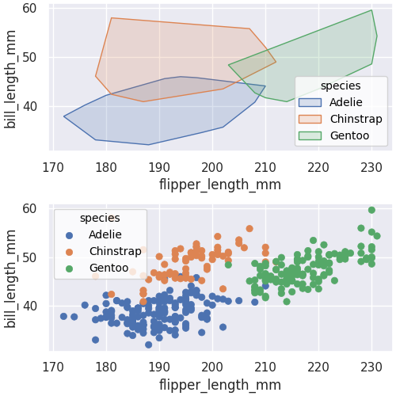

escodrinyar.Layout.__or__#
- Layout.__or__(other)#
Add a new row to the current layout.
- Parameters:
- other: Plot | Layout
The plot or layout to add in the new row.
- Returns:
- Layout
The layout with the added row.
Examples
import escodrinyar as sc import seaborn.objects as so import seaborn as sns
penguins = sns.load_dataset("penguins")
points = ( sc.Plot( data=penguins, x="flipper_length_mm", y="bill_length_mm", color="species" ) .add(so.Dot()) ) chull = ( sc.Plot( data=penguins, x="flipper_length_mm", y="bill_length_mm", color="species" ) .add(sc.ConvexHull(edgewidth=1)) )
(chull + points | chull * points).opts( figsize=(10, 10), height_ratios=[1, 2] )